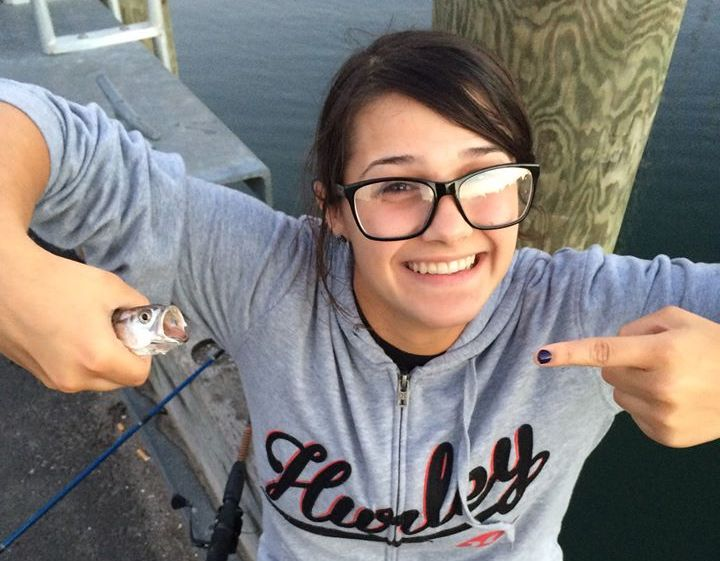

The Isolation Station Visitor Center
"Better than your local Wendy's!"
Meet the Developer
Madeline hates the coronavirus as much as the rest of us.
Backstory!
I grew up in an era where getting sick didn't mean anything. I went to school with coughs and chills and fevers well above safe temperatures. I turned out okay..or did I? I dropped out of college and am now a web developer, so you tell me.
The Coors Crisis
I don't have to go to my day job anymore. In fact, I don't have to go anywhere anymore. My doctors, my hair stylist, my tattoo artist, my snake food salesman, they all cancelled my appointments, and now I am stuck rustling mice from the shed in the backyard. OFF TOPIC. Anyways. Point is I have lots of time on my hands and I'm sure you do too.
Inception
I was eating dinner one night, and that's when I had a dream within a dream within an alcohol-induced hallucination: What if there was a place where I could find funny animal pictures, new shows to watch, new recipes to try, and hilarious jokes ALL IN ONE PLACE. And thus, the idea for The Isolation Station was born.
Evolution
My hopes for the future of my html-baby is total irrelevance due to this being the last pandemic that ever occurs. But, who am I kidding? You introverted walnuts are gonna self-isolate long after this thing is over, thus ruining any chance I had of achieving my dream.
Your Thoughts
Now that we've heard from our sponsor (ME...I am currently paying off good money for this macbook), we'd like to hear from you.
Tell us how we did! No need to be gentle, in self-isolation there is no one around to hear you crying in the bathroom.